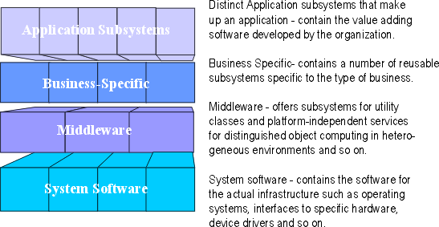

Concepts:
Layering
Topics
Layering represents an ordered grouping of functionality, with the
application-specific located in the upper layers, functionality that spans
application domains in the middle layers, and functionality specific to the
deployment environment at the lower layers.
The number and composition of layers is dependent upon the complexity of both
the problem domain and the solution space:
- There is generally only a single application-specific layer.
- Domains in which previous systems have been built, or in which large
systems are composed in turn of inter-operating smaller systems, there is a
strong need to share information between design teams. As a result, the
Business-specific layer is likely to partially exist and may be structured
into several layers for clarity.
- Solution spaces that are well-supported by middleware products and in
which complex system software plays a greater part will have well-developed
lower layers, with perhaps several layers of middleware and system software.
Subsystems should be organized into layers with application-specific
subsystems located in the upper layers of the architecture, hardware and
operating-specific subsystems located in the lower layers of the architecture,
and general-purpose services occupying the middleware layers.
The following is a sample architecture with four layers:
- The top layer, application layer, contains the
application specific services.
- The next layer, business-specific layer, contains
business specific components, used in several applications.
- The middleware layer contains components such as
GUI-builders, interfaces to database management systems,
platform-independent operating system services, and OLE-components such as
spreadsheets and diagram editors.
- The bottom layer, system software layer, contains
components such as operating systems, databases, interfaces to specific
hardware and so on.

A layered structure starting at the most general level of
functionality and growing towards more specific levels of functionality.
Layering provides a logical partitioning of subsystems
into a number of sets, with certain rules as to how relationships can be formed
between layers. The layering provides a way to restrict inter-subsystem
dependencies, with the result that the system is more loosely coupled and
therefore more easily maintained.
The criteria for grouping subsystems follow a few
patterns:
- Visibility. Subsystems may only depend on subsystems in
the same layer and the next lower layer.
- Volatility.
- In the highest layers, put elements which vary when
user requirements change.
- In the lowest layers, put elements that vary when the
implementation platform (hardware, language, operating system, database,
etc.) changes.
- Sandwiched in the middle, put elements which are generally applicable
across wide ranges of systems and implementation environments.
- Add layers when additional partitions within these broad categories
helps to organize the model.
- Generality. Abstract model elements tend to be placed
lower in the model. If not implementation-specific, they tend to gravitate
toward to middle layers.
- Number of Layers. For a small system, three layers are
sufficient. For a complex system, 5-7 layers are usually sufficient. For any
degree of complexity, more than 10 layers should be viewed with suspicion
that increases with the number of layers. Some rules of thumb are presented
below:
|
# Classes |
# Layers |
|
0 - 10 |
No
layering needed |
|
10 - 50 |
2
layers |
|
25 - 150 |
3
layers |
|
100 - 1000 |
4
layers |
Subsystems and packages within a particular layer should only depend upon
subsystems within the same layer, and at the next lower layer. Failure to
restrict dependencies in this way causes architectural degradation and makes the
system brittle and difficult to maintain.
Exceptions include cases where subsystems need direct access to lower layer
services: a conscious decision should be made on how to handle primitive
services needed throughout the system, such as printing, sending messages, etc.
There is little value in restricting messages to lower layers if the solution is
to effectively implement call pass-throughs in the intermediate layers.
Within the top-layers of the system, additional partitioning may help
organize the model. The following guidelines for partitioning present different
issues to consider:
- User organization. Subsystems may be organized along
lines that mirror the organization of functionality in the business
organization (e.g. partitioning occurs along departmental lines). This
partitioning often occurs early in the design because an existing enterprise
model has a strongly organizationally partitioned structure. This
organization pattern usually affects only the top few layers of
application-specific services, and often disappears as the design evolves.
- Partitioning along user organization lines can be a good starting
point for the model.
- The structure of the user organization is not stable over a long
period of time (due to business reorganization), and is not a good
long-term basis for system partitioning. The internal organization of
the system should enable the system to evolve and be maintained
independently of the organization of the business it supports.
- Areas of competence and/or skills. Subsystems may be
organized to partition responsibilities for parts of the model among
different groups within the development organization. Typically, this occurs
in the middle and lower layers of the system, and reflects the need for
specialization in skills during he development and support of complex
infrastructural technology. Examples of such technologies include network
and distribution management, database management, communication management,
and process control, among others. Partitioning along competence lines may
also occur in upper layers, where special competency in the problem domain
is required to understand and support key business functionality; examples
include telecommunication call management, securities trading, insurance
claims processing, and air traffic control, to name a few.
- System distribution. Within any of the layers of the
system, the layers may be further partitioned "horizontally" to
reflect the physical distribution of functionality.
- Partitioning to reflect distribution can help to visualize the network
communication which will occur as the system executes.
- Partitioning to reflect distribution can, however, make the system
more difficult to change if the Deployment Model changes significantly.
- Secrecy areas. Some applications, especially those
requiring special security clearance to develop and/or support, require
additional partitioning along security access privilege lines. Software that
control access to secrecy areas must be developed and maintained by
personnel with appropriate clearance. If the number of persons with this
background on the project is limited, the functionality requiring special
clearance must be partitioning into subsystems that will be developed
independently of other subsystems, with the interfaces to the secrecy areas
the only visible aspect of these subsystems.
- Variability areas. Functionality that is likely to be
optional, and thereby delivered only in some variants of the system, should
be organized into independent subsystems which are developed and delivered
independently of the mandatory functionality of the system.
Copyright
© 1987 - 2001 Rational Software Corporation
| |

|
 Disciplines >
Disciplines >
 Analysis & Design >
Analysis & Design >
 Concepts >
Concepts >